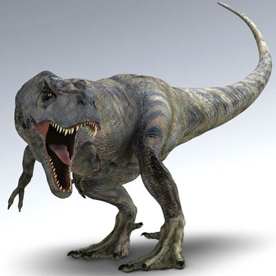

Tyrannosaurus is a large, bipedal carnivore that lived approximately 66 to
68 million years ago during the late Cretaceous Period. It is considered to be one of
the largest carnivorous dinosaurs to have ever walked the Earth and its very name means
“tyrant lizard”. It was first discovered in 1902 by Barnum Brown.
3 years later, Henry Fairfield Osborn would give this dinosaur its now iconic name.
Tyrannosaurus is believed to be one of the most aggressive and
fearsome dinosaurs to walk the planet. It stood approximately 20 feet tall,
was about 40 feet long from head to tail and weighed approximately 7 tons. It is
believed this dinosaur feasted on large herbivore dinosaurs such as triceratops and brontosaurus
dinosaurs. The T- Rex—as it is commonly referred to—had an deadly bite. It had a minimum bite force
of at least 12,000 pounds and could eat over 500 pounds of meat in one bite.
The T Rex is not only known for its size and aggressive nature,
but is also known for its very tiny hands. Scientists don’t currently
know how the Tyrannosaurus used its tiny arms or what purposes it served,
but there are some theories floating around. One theory states that these animals used
their arms to lift themselves off of the ground after they have been knocked down during battle.
Another theory stipulates that these dinosaurs used their arms to tightly grab squirming prey so they
could bite them. Considering the strength of these appendages, then this theory seems to be one of the most
plausible.
At the time of this writing, an interesting fact is that only
about 30 Tyrannosaurus skeletons have been found around the world.
Most of them have been found in the Western portion of the United States
(in Montana, Texas, Wyoming and Utah), but some have also been found in Alberta and
Saskatchewan Canada, and in Mongolia.